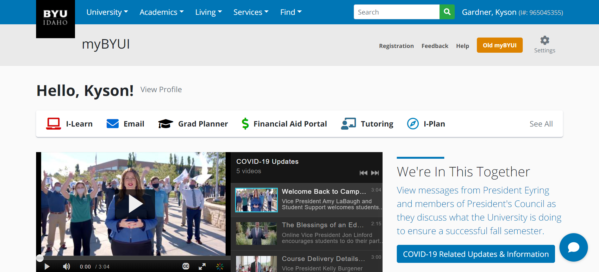
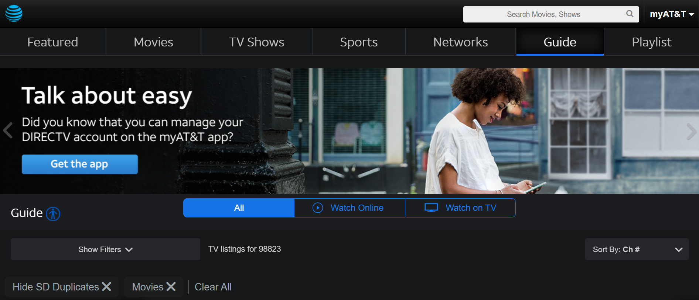
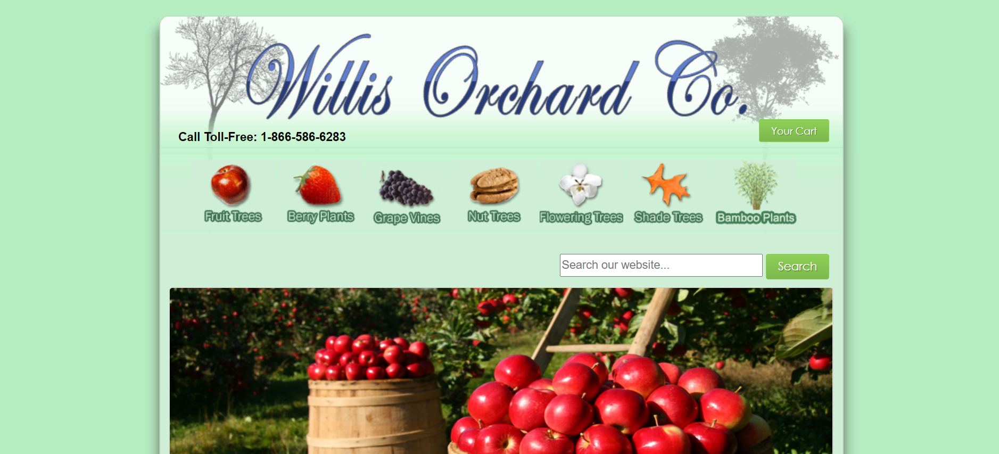

Design Principles Document
Kyson R. Gardner
Proximity
BYUI
https://web.byui.edu/portal/student/ I think BYUI does a good job of proximity. For instance, they put your name right by the buttons that you can click to help you succeed. They have connected you as a person with everything you need to be successful
Alignment
Directv
https://www.directv.com/guide Directv does a good job of alignment. They have their top toolbar all perfected lined up. It looks very nice!
Repitition
Willis Orchards
https://www.willisorchards.com/ Willis Orchards does a good job of repitition as you can see with the top they have different fruit trees, plants, and vines listed.